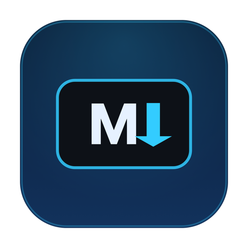

Mac Commander 다운로드 GitHub마크다운을 파일처럼 다루는 macOS 앱. 왼쪽 트리에서 고르고, 오른쪽 패널에서 그대로 읽는다.
Total Commander의 키보드 중심 파일 관리를 macOS 네이티브로 옮겼습니다. 문서 폴더를 통째로 열어두고 파일을 옮기고 이름을 바꾸면서, 같은 창에서 읽고 고칩니다.
KaTeX로 $...$와 $$...$$를 그립니다. 인터넷 연결 없이 앱 안에서 처리합니다.
Mermaid 코드 블록을 순서도·시퀀스 다이어그램으로 렌더링합니다.
| 키 | 값 |
|---|---|
| accent | #33CCFF |
| panel | #0A1A33 |
표, 코드 블록, 인용, 체크리스트를 앱 테마에 맞춘 스타일로 보여줍니다.
PDF는 확대·폭 맞춤이 되는 전용 뷰어로, 이미지는 원본 비율 그대로, HTML은 웹뷰로 엽니다. 마크다운 안에 넣은 상대 경로 이미지도 그대로 보입니다.
⌃` 를 누르면 창 아래쪽에서 터미널이 올라옵니다. 지금 트리에서 보고 있는 폴더가 곧 작업 디렉터리라서, cd 할 일이 없습니다.
버튼 하나로 그 폴더에서 Claude Code를 띄울 수 있습니다. 문서를 읽다가, 고치다가, 바로 옆에서 명령을 실행하는 흐름이 한 창 안에서 끝납니다.
dmg를 열고 앱을 응용 프로그램 폴더에 끌어다 놓으세요. Developer ID로 서명하고 Apple 공증을 받았기 때문에 경고 없이 실행됩니다.